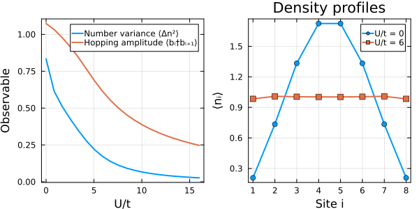
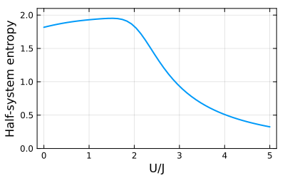

Bosons
Bosonic modes are symbolic like fermions, but need a finite local dimension for numerics, which number conservation keeps small. We use this to study the Bose-Hubbard model, where onsite repulsion suppresses number fluctuations, and a dipole-conserving model, where a second weighted NumberConservation constrains the dynamics and shapes the entanglement.
Bosonic operators and spaces
@boson a declares one mode and @bosons b a field of modes b[i]; the adjoint ' is the creation operator. Expressions are simplified using $[a, a^\dagger] = 1$, and modes on different sites commute. A Hilbert space needs a local dimension $d$, keeping the occupations $0, \dots, d-1$ of each mode: hilbert_space(a, d) for one mode and hilbert_space(b, labels, d) for a field, optionally followed by a constraint.
using FermionicHilbertSpaces@boson a@bosons ba * a' - a' * a == 1b[1]' * b[2] == b[2] * b[1]'(a' + a)^2 - a^2 - a'^21I + 2*a†*aBose-Hubbard model
The Bose-Hubbard Hamiltonian has hopping $t$ and onsite repulsion $U$,
\[H = -t \sum_{i=1}^{N-1} (b_i^\dagger b_{i+1} + \mathrm{h.c.}) + \frac{U}{2} \sum_{i=1}^N n_i(n_i - 1), \qquad n_i = b_i^\dagger b_i.\]
and conserves particle number, which reduces the Hilbert space dimension. A local dimension of one more than the particle number gives no truncation error.
N = 8M = 8local_dim = M + 1Hfull = hilbert_space(b, 1:N, local_dim)H = hilbert_space(b, 1:N, local_dim, NumberConservation(M))dim(Hfull), dim(H)(43046721, 6435)We build the matrices once and reuse them in a sweep over $U$.
n = [b[i]' * b[i] for i in 1:N]hop_sym = sum(b[i]' * b[i+1] + hc for i in 1:(N-1))int_sym = sum(n[i] * (n[i] - 1) for i in 1:N)K = representation(hop_sym, H)D = representation(int_sym, H)n_ops = [representation(n[i], H) for i in 1:N]n2_ops = [representation(n[i]^2, H) for i in 1:N]hop_ops = [representation(b[i]' * b[i+1], H) for i in 1:(N-1)]using LinearAlgebra, Arpackfunction ground_state_analysis(U; t=1.0) M = -t * K + (U / 2) * D _, vecs = eigs(M; nev=1, which=:SR) psi = vecs[:, 1] density = [dot(psi, op, psi) for op in n_ops] variance = sum(dot(psi, n2, psi) - d^2 for (n2, d) in zip(n2_ops, density)) / N hopping = sum(dot(psi, op, psi) for op in hop_ops) / (N - 1) return (; density, variance, hopping)endground_state_analysis (generic function with 1 method)Onsite repulsion suppresses particle fluctuations and hopping (left) and flattens the density profile (right).
Us = range(0, 16; length=20)sweep = [ground_state_analysis(U) for U in Us];using Plotsp1 = plot(Us, [res.variance for res in sweep]; label="Number variance ⟨Δn²⟩", xlabel="U/t", ylabel="Observable", lw=2)plot!(p1, Us, [res.hopping for res in sweep]; label="Hopping amplitude ⟨bᵢ†bᵢ₊₁⟩", lw=2)p2 = plot(1:N, ground_state_analysis(0).density; label="U/t = 0", m=:circle, lw=2, xlabel="Site i", ylabel="⟨nᵢ⟩", xticks=1:N, title="Density profiles")plot!(p2, 1:N, ground_state_analysis(6).density; label="U/t = 6", m=:square, lw=2)plot(p1, p2; layout=(1, 2), size=(600, 300), frame=:box)
Dipole-conserving model
A second conserved quantity is handled by a weighted NumberConservation, and constraints combine with *. The model
\[ H = -J \sum_i (b_{i-1}^\dagger b_{i+1}^\dagger b_i b_i + h.c.) + U/2 \sum_i n_i(n_i-1)\]
conserves the particle number $N = \sum n_i$ and the dipole moment $D = \sum i n_i$.
@bosons bfunction hamiltonian(b, N; J, U) -J * sum(b[i-1]' * b[i+1]' * b[i] * b[i] + hc for i in 2:(N-1)) + U / 2 * sum(b[i]'b[i] * (b[i]'b[i] - 1) for i in 1:N)endN = 6M = 6local_dim = M + 1 # Large enough to avoid truncation errorDtot = sum(1:N) # dipole of the uniform statenumber_cons = NumberConservation(M)dipole_cons = NumberConservation(Dtot; weights=1:N)Hfull = hilbert_space(b, 1:N, local_dim)HN = hilbert_space(b, 1:N, local_dim, number_cons) # only N fixedHND = hilbert_space(b, 1:N, local_dim, number_cons * dipole_cons) # N and D fixeddim(Hfull), dim(HN), dim(HND)(117649, 462, 32)The half-system entanglement entropy of the ground state follows from a partial trace map onto the first half of the chain.
ptmap = partial_trace(HND => subregion([b[i] for i in 1:div(N, 2)], HND))Us = range(0, 5, 50)entropies = map(Us) do U H = hamiltonian(b, N; J=1.0, U) Ψ0 = eigvecs(representation(H, HND, :dense))[:, 1] sum(-λ * log(λ) for λ in eigvals(ptmap(Ψ0)) if λ > 1e-12)endplot(Us, entropies; xlabel="U/J", ylabel="Half-system entropy", legend=false, ylims=(0, 2.1), frame=:box, size=(400, 250), lw=2)
This page was generated using Literate.jl.